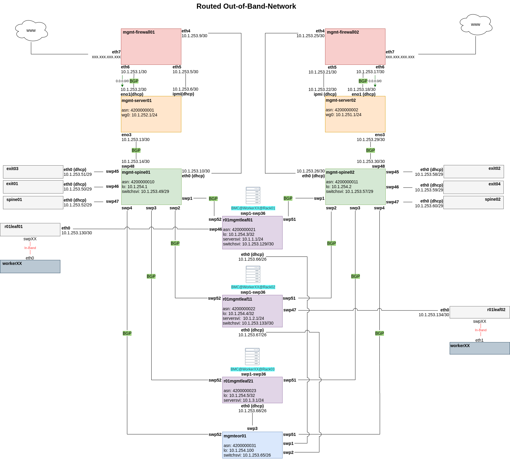

Deploying metal-stack
We are bootstrapping the metal control plane as well as our partitions with Ansible through CI.
In order to build up your deployment, we recommend to make use of the same Ansible roles that we are using by ourselves in order to deploy the metal-stack. You can find them in the repository called metal-roles.
In order to wrap up deployment dependencies there is a special deployment base image hosted on Docker Hub that you can use for running the deployment. Using this Docker image eliminates a lot of moving parts in the deployment and should keep the footprints on your system fairly small and maintainable.
This document will from now on assume that you want to use our Ansible deployment roles for setting up metal-stack. We will also use the deployment base image, so you should also have Docker installed. It is in the nature of software deployments to differ from site to site, company to company, user to user. Therefore, we can only describe you the way of how the deployment works for us. It is up to you to tweak the deployment described in this document to your requirements.
- Deploying metal-stack
- Metal Control Plane Deployment
- Releases and Ansible Role Dependencies
- Inventory
- Control Plane Playbook
- Setup an ingress-controller
- Deployment Parametrization
- Providing Certificates
- Running the Deployment
- Providing Images
- Setting up metalctl
- Setting Up the backup-restore-sidecar
- Auth
- Bootstrapping a Partition
- Partition Deployment
- Gardener with metal-stack
Probably you need to learn writing Ansible playbooks if you want to be able to deploy the metal-stack as presented in this documentation. However, even when starting without any knowledge about Ansible it should be possible to follow these docs. In case you need further explanations regarding Ansible please refer to docs.ansible.com.
If you do not want to use Ansible for deployment, you need to come up with a deployment mechanism by yourself. However, you will probably be able to re-use some of our contents from our metal-roles repository, e.g. the Helm chart for deploying the metal control plane.
You can use the mini-lab as a template project for your own deployment. It uses the same approach as described in this document.
Metal Control Plane Deployment
The metal control plane is typically deployed in a Kubernetes cluster. Therefore, this document will assume that you have a Kubernetes cluster ready for getting deployed. Even though it is theoretically possible to deploy metal-stack without Kubernetes, we strongly advise you to use the described method because we believe that Kubernetes gives you a lot of benefits regarding the stability and maintainability of the application deployment.
For metal-stack it does not matter where your control plane Kubernetes cluster is located. You can of course use a cluster managed by a hyperscaler. This has the advantage of not having to setup Kubernetes by yourself and could even become beneficial in terms of fail-safe operation. The only requirement from metal-stack is that your partitions can establish network connections to the metal control plane. If you are interested, you can find a reasoning behind this deployment decision here.
Let's start off with a fresh folder for your deployment:
mkdir -p metal-stack-deployment
cd metal-stack-deploymentAt the end of this section we are gonna end up with the following files and folder structures:
.
├── ansible.cfg
├── deploy_metal_control_plane.yaml
├── files
│ └── certs
│ ├── ca-config.json
│ ├── ca-csr.json
│ ├── metal-api-grpc
│ │ ├── client.json
│ │ ├── server.json
│ ├── masterdata-api
│ │ ├── client.json
│ │ ├── server.json
│ └── roll_certs.sh
├── inventories
│ ├── control-plane.yaml
│ └── group_vars
│ ├── all
│ │ └── images.yaml
│ └── control-plane
│ ├── common.yaml
│ └── metal.yml
├── generate_role_requirements.yaml
└── roles
└── ingress-controller
└── tasks
└── main.yamlYou can already define the inventories/group_vars/all/images.yaml file. It contains the metal-stack version you are gonna deploy:
---
metal_stack_release_version: masterReleases and Ansible Role Dependencies
As metal-stack consists of many microservices all having individual versions, we have come up with a releases repository. It contains a YAML file (we often call it release vector) describing the fitting versions of all components for every release of metal-stack.
Ansible role dependencies are also part of a metal-stack release. Therefore, we will now write up a playbook, which dynamically renders a requirements.yaml file from the ansible-roles defined in the release repository. The requirements.yaml can then be used to resolve the actual role dependencies through Ansible Galaxy. Define the following playbook in generate_role_requirements.yaml:
---
- name: generate requirements.yaml
hosts: control-plane
connection: local
gather_facts: false
vars:
release_vector_url: "https://raw.githubusercontent.com/metal-stack/releases/{{ metal_stack_release_version }}/release.yaml"
tasks:
- name: download release vector
uri:
url: "{{ release_vector_url }}"
return_content: yes
register: release_vector
- name: write requirements.yaml from release vector
copy:
dest: "{{ playbook_dir }}/requirements.yaml"
content: |
{% for role_name, role_params in (release_vector.content | from_yaml).get('ansible-roles').items() %}
- src: {{ role_params.get('repository') }}
name: {{ role_name }}
version: {{ hostvars[inventory_hostname][role_name | lower | replace('-', '_') + '_version'] | default(role_params.get('version'), true) }}
{% endfor %}This playbook will always be run before the actual metal-stack deployment and provide you with the proper versions of the Ansible role dependencies.
Inventory
Then, there will be an inventory for the control plane deployment in inventories/control-plane.yaml that adds the localhost to the control-plane host group:
---
control-plane:
hosts:
localhost:
ansible_python_interpreter: "{{ ansible_playbook_python }}"We do this since we are deploying to Kubernetes and do not need to SSH-connect to any hosts for the deployment (which is what Ansible typically does). This inventory is also necessary to pick up the variables inside inventories/group_vars/control-plane during the deployment.
We recommend using the following ansible.cfg:
[defaults]
retry_files_enabled = false
force_color = true
host_key_checking = false
stdout_callback = yaml
jinja2_native = true
transport = ssh
timeout = 30
force_valid_group_names = ignore
[ssh_connection]
retries=3
ssh_executable = /usr/bin/sshMost of the properties in there are up to taste, but make sure you enable the Jinja2 native environment as this is needed for some of our roles in certain cases.
Control Plane Playbook
Next, we will define the actual deployment playbook in a file called deploy_metal_control_plane.yaml. You can start with the following lines:
---
- name: Deploy Control Plane
hosts: control-plane
connection: local
gather_facts: no
vars:
setup_yaml:
- url: https://raw.githubusercontent.com/metal-stack/releases/{{ metal_stack_release_version }}/release.yaml
meta_var: metal_stack_release
roles:
- name: ansible-common
tags: always
- name: ingress-controller
tags: ingress-controller
- name: metal-roles/control-plane/roles/prepare
tags: prepare
- name: metal-roles/control-plane/roles/nsq
tags: nsq
- name: metal-roles/control-plane/roles/metal-db
tags: metal-db
- name: metal-roles/control-plane/roles/ipam-db
tags: ipam-db
- name: metal-roles/control-plane/roles/masterdata-db
tags: masterdata-db
- name: metal-roles/control-plane/roles/metal
tags: metalBasically, this playbook does the following:
- Include all the modules, filter plugins, etc. of ansible-common into the play
- Deploys an ingress-controller into your cluster
- Deploys the metal-stack by
- Running preparation tasks
- Deploying NSQ
- Deploying the rethinkdb database for the metal-api (wrapped in a backup-restore-sidecar),
- Deploying the postgres database for go-ipam (wrapped in a backup-restore-sidecar)
- Deploying the postgres database for the masterdata-api (wrapped in a backup-restore-sidecar)
- Applying the metal control plane helm chart
Setup an ingress-controller
As a next step you have to add a task for deploying an ingress-controller into your cluster. nginx-ingress is what we use. If you want to use another ingress-controller, you need to parametrize the metal roles carefully. When you just use ingress-nginx, make sure to also deploy it to the default namespace ingress-nginx.
This is how your roles/ingress-controller/tasks/main.yaml could look like:
- name: Deploy ingress-controller
include_role:
name: ansible-common/roles/helm-chart
vars:
helm_repo: "https://helm.nginx.com/stable"
helm_chart: nginx-ingress
helm_release_name: nginx-ingress
helm_target_namespace: ingress-nginxThe ansible-common repository contains very general roles and modules that you can also use when extending your deployment further.
Deployment Parametrization
Now you can parametrize the referenced roles to fit your environment. The role parametrization can be looked up in the role documentation on metal-roles/control-plane. You should not need to define a lot of variables for the beginning as most values are reasonably defaulted. You can start with the following content for group_vars/control-plane/common.yaml:
---
metal_control_plane_ingress_dns: <your-dns-domain> # if you do not have a DNS entry, you could also start with <ingress-ip>.xip.ioProviding Certificates
We have several components in our stack that communicate over encrypted gRPC just like Kubernetes components do.
For the very basic setup you will need to create self-signed certificates for the communication between the following components (see architecture document):
- metal-api and masterdata-api (in-cluster traffic communication)
- metal-api and metal-hammer (partition to control plane communication)
Here is a snippet for files/roll_certs.sh that you can use for generating your certificates (requires cfssl):
#!/usr/bin/env bash
set -eo pipefail
for i in "$@"
do
case $i in
-t=*|--target=*)
TARGET="${i#*=}"
shift
;;
*)
echo "unknown parameter passed: $1"
exit 1
;;
esac
done
if [ -z "$TARGET" ]; then
echo "generating ca cert"
cfssl genkey -initca ca-csr.json | cfssljson -bare ca
rm *.csr
fi
if [ -z "$TARGET" ] || [ $TARGET == "grpc" ]; then
pushd metal-api-grpc
echo "generating grpc certs"
cfssl gencert -ca=../ca.pem -ca-key=../ca-key.pem -config=../ca-config.json -profile=server server.json | cfssljson -bare server
cfssl gencert -ca=../ca.pem -ca-key=../ca-key.pem -config=../ca-config.json -profile=client client.json | cfssljson -bare client
rm *.csr
popd
fi
if [ -z "$TARGET" ] || [ $TARGET == "masterdata-api" ]; then
pushd masterdata-api
echo "generating masterdata-api certs"
rm -f *.pem
cfssl gencert -ca=../ca.pem -ca-key=../ca-key.pem -config=../ca-config.json -profile=client-server server.json | cfssljson -bare server
cfssl gencert -ca=../ca.pem -ca-key=../ca-key.pem -config=../ca-config.json -profile=client client.json | cfssljson -bare client
rm *.csr
popd
fiAlso define the following configurations for cfssl:
files/certs/ca-config.json{ "signing": { "default": { "expiry": "43800h" }, "profiles": { "server": { "expiry": "43800h", "usages": [ "signing", "key encipherment", "server auth" ] }, "client": { "expiry": "43800h", "usages": [ "signing", "key encipherment", "client auth" ] }, "client-server": { "expiry": "43800h", "usages": [ "signing", "key encipherment", "client auth", "server auth" ] } } } }files/certs/ca-csr.json{ "CN": "metal-control-plane", "hosts": [], "key": { "algo": "rsa", "size": 4096 }, "names": [ { "C": "DE", "L": "Munich", "O": "Metal-Stack", "OU": "DevOps", "ST": "Bavaria" } ] }files/certs/masterdata-api/client.json{ "CN": "masterdata-client", "hosts": [""], "key": { "algo": "ecdsa", "size": 256 }, "names": [ { "C": "DE", "L": "Munich", "O": "Metal-Stack", "OU": "DevOps", "ST": "Bavaria" } ] }files/certs/masterdata-api/server.json{ "CN": "masterdata-api", "hosts": [ "localhost", "masterdata-api", "masterdata-api.metal-control-plane.svc", "masterdata-api.metal-control-plane.svc.cluster.local" ], "key": { "algo": "ecdsa", "size": 256 }, "names": [ { "C": "DE", "L": "Munich", "O": "Metal-Stack", "OU": "DevOps", "ST": "Bavaria" } ] }files/certs/metal-api-grpc/client.json{ "CN": "grpc-client", "hosts": [""], "key": { "algo": "rsa", "size": 4096 }, "names": [ { "C": "DE", "L": "Munich", "O": "Metal-Stack", "OU": "DevOps", "ST": "Bavaria" } ] }files/certs/metal-api-grpc/server.json(Fill in your control plane ingress DNS here){ "CN": "metal-api", "hosts": [ "<your-metal-api-dns-ingress-domain>" ], "key": { "algo": "rsa", "size": 4096 }, "names": [ { "C": "DE", "L": "Munich", "O": "Metal-Stack", "OU": "DevOps", "ST": "Bavaria" } ] }
Running the roll_certs.sh bash script without any arguments should generate you the required certificates.
Now Provide the paths to these certificates in group_vars/control-plane/metal.yaml:
---
metal_masterdata_api_tls_ca: "{{ lookup('file', 'certs/ca.pem') }}"
metal_masterdata_api_tls_cert: "{{ lookup('file', 'certs/masterdata-api/server.pem') }}"
metal_masterdata_api_tls_cert_key: "{{ lookup('file', 'certs/masterdata-api/server-key.pem') }}"
metal_masterdata_api_tls_client_cert: "{{ lookup('file', 'certs/masterdata-api/client.pem') }}"
metal_masterdata_api_tls_client_key: "{{ lookup('file', 'certs/masterdata-api/client-key.pem') }}"
metal_api_grpc_certs_server_key: "{{ lookup('file', 'certs/metal-api-grpc/server-key.pem') }}"
metal_api_grpc_certs_server_cert: "{{ lookup('file', 'certs/metal-api-grpc/server.pem') }}"
metal_api_grpc_certs_client_key: "{{ lookup('file', 'certs/metal-api-grpc/client-key.pem') }}"
metal_api_grpc_certs_client_cert: "{{ lookup('file', 'certs/metal-api-grpc/client.pem') }}"
metal_api_grpc_certs_ca_cert: "{{ lookup('file', 'certs/ca.pem') }}"For the actual communication between the metal-api and the user clients (REST API, runs over the ingress-controller you deployed before), you can simply deploy a tool like cert-manager into your Kubernetes cluster, which will automatically provide your ingress domains with Let's Encrypt certificates.
Running the Deployment
Finally, it should be possible to run the deployment through a Docker container. Make sure to have the Kubeconfig file of your cluster and set the path in the following command accordingly:
export KUBECONFIG=<path-to-your-cluster-kubeconfig>
docker run --rm -it \
-v $(pwd):/workdir \
--workdir /workdir \
-e KUBECONFIG="${KUBECONFIG}" \
-e K8S_AUTH_KUBECONFIG="${KUBECONFIG}" \
-e ANSIBLE_INVENTORY=inventories/control-plane.yaml \
metalstack/metal-deployment-base:v0.3.1 \
/bin/bash -ce \
"ansible-playbook obtain_role_requirements.yaml
ansible-galaxy install -r requirements.yaml
ansible-playbook deploy_metal_control_plane.yaml"If you are having issues regarding the deployment take a look at the troubleshoot document. Please give feedback such that we can make the deployment of the metal-stack easier for you and for others!
Providing Images
After the deployment has finished (hopefully without any issues!), you should consider deploying some masterdata entities into your metal-api. For example, you can add your first machine sizes and operating system images. You can do this by further parametrizing the metal role. We will just add an operating system for demonstration purposes. Add the following variable to your inventories/group_vars/control-plane/common.yaml:
metal_api_images:
- id: firewall-ubuntu-2.0.20201004
name: Firewall 2 Ubuntu 20201004
description: Firewall 2 Ubuntu 20201004
url: http://images.metal-stack.io/metal-os/master/firewall/2.0-ubuntu/20201004/img.tar.lz4
features:
- firewall
- id: ubuntu-20.04.20201004
name: Ubuntu 20.04 20201004
description: Ubuntu 20.04 20201004
url: http://images.metal-stack.io/metal-os/master/ubuntu/20.04/20201004/img.tar.lz4
features:
- machineThen, re-run the deployment to apply your changes. Our playbooks are idempotent.
Image versions should be regularly checked for updates.
Setting up metalctl
You can now verify the existence of the operating system images in the metal-api using our CLI client called metalctl. The configuration for metalctl should look like this:
# ~/.metalctl/config.yaml
---
current: test
contexts:
test:
# the metal-api endpoint depends on your dns name specified before
# you can look up the url to the metal-api via the kubernetes ingress
# resource with:
# $ kubectl get ingress -n metal-control-plane
url: <metal-api-endpoint>
# in the future you have to change the HMAC to a strong, random string
# in order to protect against unauthorized api access
# the default hmac is "change-me"
hmac: change-meIssue the following command:
$ metalctl image ls
ID NAME DESCRIPTION FEATURES EXPIRATION STATUS
ubuntu-19.10.20200331 Ubuntu 19.10 20200331 Ubuntu 19.10 20200331 machine 89d 23h previewThe basic principles of how the metal control plane can be deployed should now be clear. It is now up to you to move the deployment execution into your CI and add things like certificates for the ingress-controller and NSQ.
Setting Up the backup-restore-sidecar
The backup-restore-sidecar can come up very handy when you want to add another layer of security to the metal-stack databases in your Kubernetes cluster. The sidecar takes backups of the metal databases in small time intervals and stores them in a blobstore of a cloud provider. This way your metal-stack setup can even survive the deletion of your Kubernetes control plane cluster (including all volumes getting lost). After re-deploying metal-stack to another Kubernetes clusters, the databases come up with the latest backup data in a matter of seconds.
Checkout the role documentation of the individual databases to find out how to configure the sidecar properly. You can also try out the mechanism from the backup-restore-sidecar repository.
Auth
metal-stack currently supports two authentication methods:
- dex for providing user authentication through OpenID Connect (OIDC)
- HMAC auth, typically used for access by technical users (because we do not have service account tokens at the time being)
In the metal-api, we have three different user roles for authorization:
- Admin
- Edit
- View
How the user permissions are used is documented in the technical API docs.
If you decided to set up a dex server, you can parametrize the metal role for using the dex server by defining the variable metal_api_dex_address.
We also have dedicated controllers for using the dex server for Kubernetes clusters when deploying metal-stack along with the Gardener in your environment. The approach is described in further detail in the section Gardener with metal-stack.
Bootstrapping a Partition
Out-Of-Band-Network
To be able to deploy and maintain a metal-stack partition, you need to bootstrap the Out-Of-Band-Network first. Some considerations must be made to fulfill the requirements of our infrastructure, a partition is designed to be:
- secure
- fully routable (BGP)
- scalable
- resilient
- deployable via CI/CD jobs
- accessible from the internet from specific IPs
In order to accomplish this task remotely and in a nearly automatic manner, you have to bootstrap the components in this order:
- management firewalls
- management servers
- management spines
- management leaves
- leaves, spines and exits
This document assumes that all cabling is done. Here is a quick overview of the architecture:

Management Firewalls
As you can see, the management firewalls are the first bastion hosts in a partition to provide access to our infrastructure. There are two of them in each partition to guarantee high availability and load balancing. The very first configuration of these routers has to be done manually to solve the chicken and egg problem that you need the management firewalls in place to deploy the partition. Manually means that we generate a configuration template with ansible that we deploy with copy/paste, and the load, through the machine console. Once the management server has been deployed, we are able to deploy this configuration via CI runner and ansible. For this you need the user and the ssh-key, which is deployed with the configuration file mentioned above. The Edgerouters has to fulfill some requirements including:
- provide and restrict access to the Out-Of-Band-Network from the internet with a firewall ruleset
- provide destination NAT to the management server and its IPMI interface
- provide Onie Boot and ztp via DHCP options for the management spine
- provide DHCP management addresses for management spine, management server and ipmi interface of the management server
- Hairpin-NAT for the management server to access itself via its puplic IP, needed by the CI runner to delegate CI Jobs.
- propagate a default gateway via BGP
Management Servers
The second bastion hosts are the management servers. They are the main bootstrapping components of the Out-Of-Band-Network. They also act as jump hosts for all components in a partition. Once they are installed and deployed, we are able to bootstrap all the other components. To bootstrap the management servers, we generate an ISO image which will automatically install an OS and an ansible user with ssh keys. It is preconfigured with a preseed file to allow an unattended OS installation for our needs. This is why we need remote access to the IPMI interface of the management servers: The generated ISO is attached via the virtual media function of the BMC. Ater that, all we have to do is boot from that virtual CD-ROM and wait for the installation to finish. Deployment jobs (Gitlab-CI) in a partition are delegated to the appropriate management servers, therefore we need a CI runner active on each management server.
After the CI runner has been installed, you can trigger your Playbooks from the the CI. The Ansible-Playbooks have to make sure that these functionalities are present on the management servers:
- BMC proxy / BMC reverse proxy
- Prometheus and exporters
- CI runner
- bmc-catcher
- image-cache
- simple webserver to provide images
- Onie Boot and ZTP (Demo) for cumulus switches
- DHCP addresses for ipmi interfaces of the workers
- DHCP addresses for switches
Management Spines
If you are using Cumulus switches, you should make use of Zero Touch Provisioning and Onie Boot
The purpose of these switches is to connect the management interfaces of all switches to the management servers. The management spine's own management interface is connected to the management firewall for the bootstrapping of the management spine itself. The management firewall will provide a DHCP address and DHCP options to start Cumulus' Zero Touch Provisioning; the images for all switches are downloaded from the management server (minio/webserver). Each management leaf is connected to both management spines to provide redundant connectivity to both management servers. BGP is used as a routing protocol such that, when a link goes down, an alternate path is used. In the picture above you can see that there are also switch management interfaces connected to the management spine. This has to be done so that we can bootstrap these switches; the management spine relays the DHCP requests from these switches to the management servers so that they are able to Onie Boot and get their ZTP scripts.
Management Leaves
All workers have to be connected with their IPMI/BMC interface to the management leaves to get DHCP addresses from the management server. The management leaves are relaying those DHCP requests to the management server which will answer the requests and provide IPs from a given range. The management interfaces of the management leaves also have to be reachable from the management server, and need to get their IP address via DHCP for the bootstrapping process.
In the example setup, these interfaces are connected to an end-of-row-switch which aggregates them and connects them to the management spines with a fiber-optics connection. If you can reach the management spines from the management leaves with copper cables, you do not need the end of row switch. After the initial bootstrapping, the management interfaces of the management leaves continue to be used for access to the switches' command line, and for subsequent OS updates. (update=reset+bootrap+deployment)
Partition Deployment
Gardener with metal-stack
If you want to deploy metal-stack as a cloud provider for Gardener, you should follow the regular Gardener installation instructions and setup a Gardener cluster first. It's perfectly fine to setup the Gardener cluster in the same cluster that you use for hosting metal-stack.
You can find installation instructions for Gardener on the Gardener website beneath docs. metal-stack is an out-of-tree provider and therefore you will not find example files for metal-stack resources in the Gardener repositories. The following list describes the resources and components that you need to deploy into the Gardener cluster in order to make Gardener work with metal-stack:
The following list assumes you have Gardener installed in a Kubernetes cluster and that you have a basic understanding of how Gardener works. If you need further help with the following steps, you can also come and ask in our Slack channel.
- Deploy the validator from the gardener-extension-provider-metal repository to your cluster via Helm
- Add a cloud profile called
metalcontaining all your machine images, machine types and regions (region names can be chosen freely, the zone names need to match your partition names) together with our metal-stack-specific provider config as defined here - Register the gardener-extension-provider-metal controller by deploying the controller-registration into your Gardener cluster, parametrize the embedded chart in the controller registration's values section if necessary (this is the corresponding values file)
- metal-stack does not provide an own backup storage infrastructure for now. If you want to enable ETCD backups (which you should do because metal-stack also does not have persistent storage out of the box, which makes these backups even more valuable), you should deploy an extension-provider of another cloud provider and configure it to only reconcile the backup buckets (you can reference this backup infrastructure used for the metal shoot in the shoot spec)
- Register the os-extension-provider-metal controller by deploying the controller-registration into your Gardener cluster, this controller can transform the operating system configuration from Gardener into Ingition user data
- You need to use the Gardener's networking-calico controller for setting up shoot CNI, you will have to put specific provider configuration into the shoot spec to make it work with metal-stack:
networking: type: calico # we can peer with the frr within 10.244.0.0/16, which we do with the metallb # the networks for the shoot need to be disjunct with the networks of the seed, otherwise the VPN connection will not work properly # the seeds are typically deployed with podCIDR 10.244.128.0/18 and serviceCIDR 10.244.192.0/18 # the shoots are typically deployed with podCIDR 10.244.0.0/18 and serviceCIDR 10.244.64.0/18 pods: 10.244.0.0/18 services: 10.244.64.0/18 providerConfig: apiVersion: calico.networking.extensions.gardener.cloud/v1alpha1 kind: NetworkConfig backend: vxlan ipv4: pool: vxlan mode: Always autoDetectionMethod: interface=lo typha: enabled: false - For your seed cluster you will need to provide the provider secret for metal-stack containing the key
metalAPIHMac, which is the API HMAC to grant editor access to the metal-api - Checkout our current provider configuration for infrastructure and control-plane before deploying your shoot
We are officially supported by Gardener dashboard. The dashboard can also help you setting up some of the resources mentioned above.